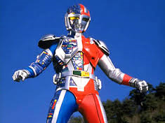

- tokusatsu
- metalder
No ano de 1945, o doutor Ryuchiro Koga construiu Metalder como sendo a mais poderosa arma do exército japonês durante a Guerra do Pacífico. Koga utilizou as feições de seu falecido filho Tetsuo para a construção do Homem Máquina. Pacifista, o doutor acabou não utilizando sua criação para a guerra.
Ex-parceiro de Koga na construção Metalder, o major Isao Muraki planejava finalizar o projeto antes do doutor. Suas experiências mutantes com prisioneiros foram descobertas e foi condenado. Fugiu para os Estados Unidos e lá criou um poderoso império criminoso. Após cirurgias plásticas, assume a persona de Makoto Dolbara, um magnata da indústria. Ao ser envolvido na escuridão da noite, assume sua verdadeira forma, a mutação Neroz, líder do império homônimo. Após Koga descobrir que Muraki voltou à ativa, decide ativar Metalder para que ele dê cabo dos inimigos. Seu plano dá certo, mas acaba morrendo pelas mãos dos capangas de Neroz logo no início da série.
Os braços do Império Neroz estão divididos em Unidade Blindada, Unidade Cibernética, Unidade Mecanol, e a Tropa Monster. Seus líderes são, respectivamente, Arthur (Coolgin), Balzac (Barsky), Druon e Darvius. Os comandantes respondem pelos fracassos ou sucessos dos ataques de suas unidades. O mais poderoso deles é Arthur, braço-direito de Neroz (e seu sósia em determinado momento da história). Já Balzac é um dos mais honrados guerreiros do Império, e sua derradeira luta com Metalder torna-se um dos momentos mais bonitos da série.
Na luta contra o Império Neroz, Metalder conta com a ajuda das sofisticadas criações do Dr. Koga, inclusive Springer, um doberman-robô falante e auxiliar do herói em sua base secreta. Nas batalhas que se seguem, alguns soldados de Neroz rebelam-se contra o mestre, com destaque para o poderoso Top Gunder. Cheia de reviravoltas, a série termina com o sacrifício do herói, que destrói o Imperador Neroz, mas também perde sua parte humana.